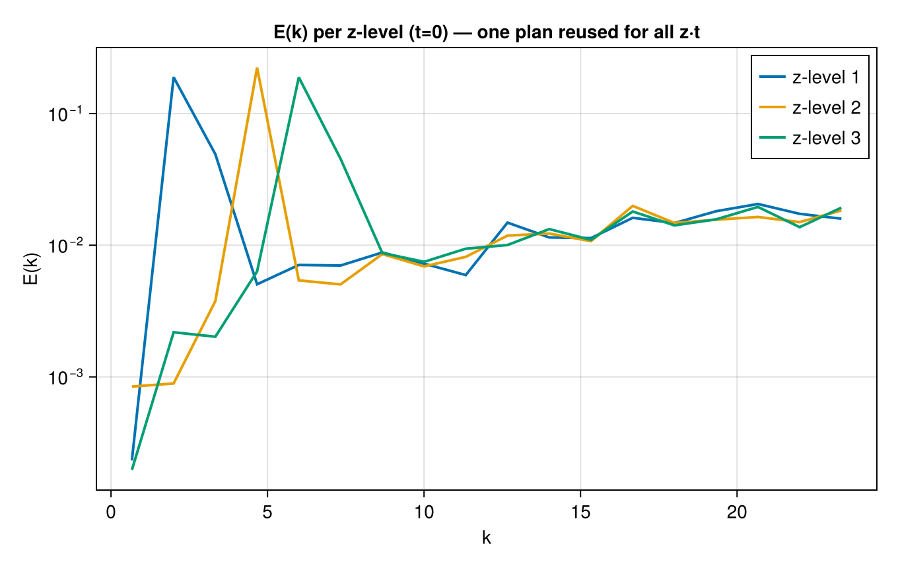

Horizontal spectra of a 4D field on a fixed grid
The defining workflow: horizontal (x, y) spectra of a field f(x, y, z, t) sampled on a fixed, non-uniform horizontal grid. Because the horizontal points never move, the FINUFFT plan and point-sorting are built once and the whole z × t stack is transformed in a single batched execution — then the plan is reused across the time loop. This is the fast path for per-level / per-time spectra of large geophysical datasets.
using FlowFieldSpectra: FlowFieldSpectra as FFS
using FINUFFT: FINUFFT # activates the NUFFTBackend extension
using CairoMakie: CairoMakie as Mke
using Random: Random
Random.seed!(42)
L = 2π
N = 48
nz, nt = 3, 4
ms = (N, N)
# Fixed non-uniform horizontal locations.
xv = rand(N * N) .* L
yv = rand(N * N) .* L
hgrid = FFS.ScatteredCartesianGrid((xv, yv); domain_size = (L, L))
# f(x,y,z,t): dominant horizontal scale sharpens with height z and drifts in time t.
nb = nz * nt
stack = Array{Float64}(undef, length(xv), nb)
kz = range(2, 6; length = nz)
for (it, t) in enumerate(range(0, 1; length = nt)), (iz, k0) in enumerate(kz)
b = (it - 1) * nz + iz
@. stack[:, b] = cos(k0 * xv + 2π * t) + 0.5 * sin((k0 + 1) * yv)
end
# ONE plan build; transform the entire z·t stack in a single exec.
plan = FFS.plan_spectrum(FFS.NUFFTBackend(), hgrid, Float64, ms; n_transf = nb, eps = 1e-9)
coeffs = zeros(ComplexF64, ms..., nb)
ks = FFS.calculate_spectrum!(coeffs, plan, stack)
# E(k) per level at the first time step.
nbins = 18
fig = Mke.Figure(size = (680, 430))
ax = Mke.Axis(fig[1, 1]; title = "E(k) per z-level (t=0) — one plan reused for all z·t",
xlabel = "k", ylabel = "E(k)", yscale = log10)
for iz in 1:nz
slice = reshape(view(coeffs, :, :, iz), ms..., 1)
kb, Ek = FFS.isotropic_spectrum(ks, slice; num_bins = nbins)
Mke.lines!(ax, kb, Ek .+ 1e-20; linewidth = 2, label = "z-level $iz")
end
Mke.axislegend(ax; position = :rt)
fig